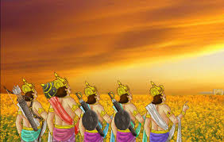
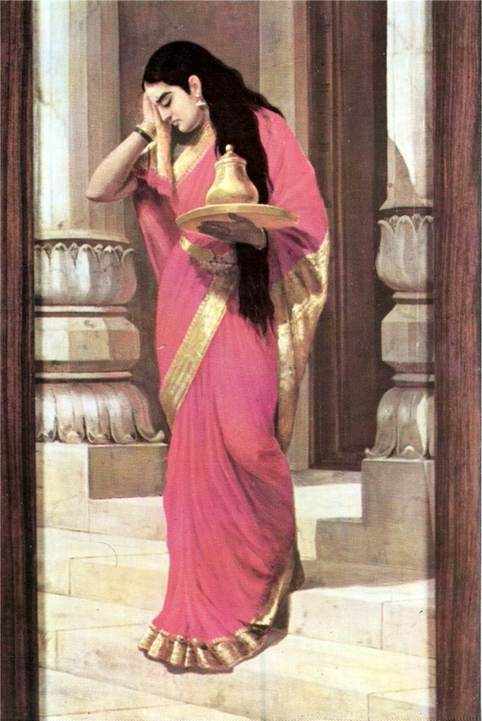

📖 अध्याय 4: विराट पर्व
विराट पर्व महाभारत का चौथा अध्याय है, जो पांडवों के अज्ञातवास के अंतिम एक वर्ष को दर्शाता है। दुर्योधन के षड्यंत्र के कारण पांडवों को बारह वर्षों का वनवास और एक वर्ष का अज्ञातवास सहना पड़ा। यह पर्व उसी अज्ञातवास की कथा है, जिसमें पांडवों ने अपनी पहचान गुप्त रखते हुए, विविध वेशों में राजा विराट के राज्य में जीवन व्यतीत किया।
🔹 मुख्य विषय:
- अज्ञातवास की शुरुआत
- राजा विराट के राज्य में प्रवेश
- पांडवों द्वारा गुप्त वेश धारण करना
- राजा विराट के दरबार में पांडवों की सेवाएँ
- द्रौपदी द्वारा सैरंध्री रूप में महारानी सुदेष्णा की सेवा
📖 अज्ञातवास की शुरुआत

बारह वर्षों के कठिन वनवास के पश्चात पांडवों के जीवन में वह क्षण आया जब उन्हें तेरहवाँ वर्ष, अज्ञातवास के रूप में पूर्ण करना था। यह अज्ञातवास केवल एक परीक्षण नहीं था, यह उनके धैर्य, बुद्धिमत्ता और आत्मनियंत्रण की अग्निपरीक्षा थी। दुर्योधन की शर्त के अनुसार, यदि पांडव इस एक वर्ष में पकड़े जाते, तो उन्हें फिर से बारह वर्षों के वनवास में भेज दिया जाता। इसलिए यह समय उनके लिए अत्यंत संवेदनशील और निर्णायक था।
पांडवों ने अज्ञातवास के लिए राजा विराट के मत्स्य देश को चुना। यह स्थान न केवल सुरक्षित था, बल्कि वहाँ शरण लेकर वे सहजता से आम जनमानस में विलीन हो सकते थे। उन्होंने ऐसे वेश धारण किए जो उनकी पहचान से बिल्कुल विपरीत थे। युधिष्ठिर ने ‘कंक’ नामक ब्राह्मण का रूप लिया और राजसभा में पासा खेलने वाला ज्ञानी बना। भीम ने बलवान ‘बलवंत’ रसोइये का वेश धारण किया। अर्जुन, जिसे स्त्री-शाप मिला था, ने 'बृहन्नला' नामक नपुंसक संगीत शिक्षक का रूप लिया। नकुल ने घुड़साल में काम करने वाला और सहदेव ने गोधन पालक का रूप लिया। द्रौपदी ने 'सैरंध्री' नामक दासी बनकर महारानी सुदेष्णा की सेवा की।
यह आरंभिक काल कठिन था। केवल वेश बदल लेने से कोई सामान्य नहीं हो जाता – पांडवों जैसे पराक्रमी योद्धा, जो वर्षों तक क्षत्रिय धर्म निभाते रहे थे, अब सेवकों की भूमिका निभा रहे थे। परंतु यही उनकी महानता थी – परिस्थिति के अनुसार स्वयं को ढालना और अपने लक्ष्य की प्राप्ति हेतु त्याग करना।
इस आरंभिक चरण में पांडवों ने केवल अपनी पहचान ही नहीं छिपाई, बल्कि अपने भीतर की अग्नि को भी नियंत्रण में रखा। उन्हें रोज़ अपमान सहना पड़ा, अन्य सेवकों की दृष्टि में निम्न समझा गया – पर उन्होंने कोई विरोध नहीं किया। क्योंकि उनका उद्देश्य स्पष्ट था – सम्मान की पुनः प्राप्ति और धर्म की स्थापना।
📌 सीख:
अज्ञातवास की शुरुआत यह सिखाती है कि जीवन में कुछ चरण ऐसे होते हैं जब हमारी शक्ति चुप्पी में होती है, और हमारी सबसे बड़ी विजय तब होती है जब हम अपने स्वाभिमान को नियंत्रित कर, परिस्थिति अनुसार स्वयं को ढालते हैं। यह आत्मनियंत्रण ही सफलता की पहली सीढ़ी है।
विराट नगर में पांडवों का गुप्त जीवन
अज्ञातवास के प्रारंभ के साथ ही पांडवों के सामने एक नई चुनौती थी—अपनी पहचान को छुपाए रखना और एक वर्ष तक सामान्य जीवन जीना। यदि इस अवधि में कोई उन्हें पहचान लेता, तो उन्हें पुनः बारह वर्ष का वनवास भोगना पड़ता। इस संकट की घड़ी में उन्होंने शरण ली विराट नगर के राजा विराट के यहाँ। यही से आरंभ होता है उनके गुप्त जीवन का महत्वपूर्ण अध्याय।
युधिष्ठिर – कंक का रूप
धर्मराज युधिष्ठिर ने अपना नाम रखा 'कंक' और राजा विराट के पास राजसभा में पासे खेलने और नीति समझाने वाले मंत्री के रूप में नियुक्त हुए। उनका आचरण और विवेक इतना शुद्ध था कि कोई उन्हें पहचान नहीं सका। कंक के रूप में वे राजा को धर्म और नीति की शिक्षा देते रहे।
भीम – बल्लव बनकर रसोई में
महाबली भीम ने 'बल्लव' नाम से राजा के भोजनालय में कार्य करना स्वीकार किया। वे महाराज के रसोइये बनकर उनकी सेवा में लगे। उनके बल और स्वादिष्ट पकवानों की चर्चा पूरे महल में होने लगी। कीचक जैसे बलवान भी उनके व्यंजनों के प्रेमी बन गए थे, लेकिन कोई उनकी असली पहचान नहीं जान पाया।
अर्जुन – बृहन्नला का वेश
अर्जुन, जिन्होंने उर्वशी के श्राप के कारण एक वर्ष तक नपुंसक जीवन जीने का वचन दिया था, उन्होंने 'बृहन्नला' नामक नृत्य-गान की आचार्य का रूप धारण किया। उन्होंने राजकुमारी उत्तरा को नृत्य और संगीत सिखाया। उनकी कोमलता और सौम्यता के कारण कोई यह समझ भी नहीं पाया कि यह वही अर्जुन हैं जिन्होंने देवताओं से दिव्यास्त्र प्राप्त किए थे।
नकुल – अश्वसेवक
सुंदर और अश्वविद्या में निपुण नकुल ने घुड़शाला की जिम्मेदारी संभाली। वे राजा विराट के घोड़ों की सेवा में लग गए। वे 'तनुपाल' के नाम से घोड़ों को सजाना, उनका इलाज करना, और युद्ध हेतु तैयार करना जैसे कार्य करते थे।
सहदेव – गौपालक
सहदेव, जो पशुपालन और खगोलशास्त्र में कुशल थे, उन्होंने 'अर्धनामी' नाम से राजा की गायों की देखरेख का कार्य संभाला। वे गोधूलि वेला में गायों को चराकर लाते और उनका पथ प्रदर्शन करते। उनकी बुद्धिमत्ता से पूरा नगर प्रभावित था, लेकिन उनकी पहचान गुप्त रही।
द्रौपदी – सैरंध्री के रूप में
पांचों पांडवों की प्रिय पत्नी द्रौपदी ने 'सैरंध्री' के नाम से महारानी सुदेष्णा की सेवा करना स्वीकार किया। वह उन्हें श्रृंगार सज्जा करतीं और महल के अंदरूनी कामकाज देखतीं। किंतु उनकी सुंदरता और गरिमा देख कर कीचक जैसा पुरुष उनकी ओर आकर्षित हो गया, जिससे आगे एक बड़ा संकट उत्पन्न हुआ।
गोपनीयता में जीवन और धैर्य की परीक्षा
यह एक वर्ष पांडवों के लिए केवल छुप कर जीने का नहीं, बल्कि अपने अहंकार, पहचान और बल को नियंत्रित करने का काल था। यह समय उनके धैर्य, संयम और आत्मबल की परीक्षा थी। हर क्षण उन्हें भय था कि कोई उन्हें पहचान न ले, किंतु उन्होंने अपने व्यवहार से किसी को कोई संदेह नहीं होने दिया।
विराट नगर की भूमि पर एक शांत तूफान
विराट नगर में पांडवों ने जैसे एक शांत तूफान की भाँति अपना जीवन बिताया—भीतर से वे वही युद्धवीर थे, पर बाहर से साधारण जन। उनका यह गुप्त जीवन, उनका आत्मसंयम और उनकी संकल्प शक्ति, उन्हें और भी महान बनाती है।
यह अध्याय अज्ञातवास की उस यात्रा का मध्य बिंदु है जहाँ त्याग, गुप्तता और धैर्य के साथ पांडवों ने अपने भविष्य के युद्ध की तैयारी की। और यही वो समय था जब वे स्वयं को भी भीतर से और अधिक तपाकर महायुद्ध के योग्य बना रहे थे।
🕵️ पांडवों द्वारा गुप्त वेश धारण करना

महाभारत का यह वह क्षण था, जब पांडवों ने जीवन के सबसे कठिन पड़ाव पर कदम रखा। युधिष्ठिर, भीम, अर्जुन, नकुल, सहदेव और द्रौपदी – सभी को अब बारह वर्ष के वनवास के बाद एक वर्ष तक अज्ञातवास में रहना था। यह एक वर्ष ऐसा था, जिसमें उनका अस्तित्व छिपा रहना अनिवार्य था। यदि उन्हें पहचान लिया गया, तो पुनः बारह वर्षों के वनवास का दंड भुगतना पड़ता। यही शर्त द्यूतसभा में शाकुनि द्वारा बनाई गई थी, और युधिष्ठिर ने उसे स्वीकार किया था – धर्म के नाम पर।
इस निर्णय के साथ ही पांडवों ने मत्स्य देश की ओर प्रस्थान किया, जहाँ राजा विराट का राज्य था। यही स्थान उनके अज्ञातवास का केंद्र बना। लेकिन प्रश्न था – वे स्वयं को कैसे छिपाएँगे? कैसे पहचान से अलग जीवन जिएंगे? कैसे धर्म की रक्षा करते हुए स्वयं को जनसामान्य में विलीन करेंगे?
युधिष्ठिर – कंक नामक ब्राह्मण
धर्मराज युधिष्ठिर ने कंक नामक एक विद्वान ब्राह्मण का रूप धारण किया। उन्होंने राजा विराट की सभा में राजविद्या, शास्त्रों की नीति, शतरंज की कला और धर्मसंकट के उत्तर सिखाने वाले सलाहकार का स्थान लिया। वह शांत थे, गंभीर थे, और अपने सत्यप्रिय स्वभाव से राजा को प्रभावित करते थे। उन्होंने सदा नीति की बात की, किंतु किसी को अपने वास्तविक अस्तित्व की झलक तक न दी।
भीम – बल्लव रसोइया
बलशाली भीमसेन ने ‘बल्लव’ नामक रसोइये का रूप धारण किया। उन्होंने महाराज विराट की रसोई में प्रवेश पाया और वहाँ स्वादिष्ट भोजन बनाकर सबको चमत्कृत किया। उनका पराक्रम और शक्तिशाली शरीर देखकर कभी-कभी दरबारी चकित हो जाते, परंतु कोई भी यह कल्पना नहीं कर सका कि यह वही भीम है जिसने बकासुर जैसे राक्षस का वध किया था।
अर्जुन – बृहन्नला
अर्जुन ने सबसे विचित्र और कठिन वेश धारण किया। उन्होंने बृहन्नला नामक एक नपुंसक नर्तक का रूप लिया। अर्जुन को उर्वशी के श्राप के कारण एक वर्ष तक नपुंसक रहने का शाप प्राप्त था। उन्होंने राजकुमारी उत्तर को नृत्य और संगीत सिखाया। वे स्त्री-वेश में नृत्य करते, पर भीतर से वही रणवीर थे, जो गाण्डीव के एक तीर से रणभूमि को पलट सकते थे।
नकुल – अश्वपाल
सुंदर व सुशील नकुल ने अश्वपाल यानी घुड़साल के सेवक का कार्य संभाला। उन्होंने अल्प समय में अस्तबल को सुव्यवस्थित कर दिया। नकुल का सौम्य स्वभाव लोगों को प्रभावित करता, परंतु उनके भीतर की राजसी गरिमा सबकी दृष्टि से ओझल रही।
सहदेव – गौपाल
विद्वान सहदेव ने गौशाला की सेवा स्वीकार की। वे गोवंश की चिकित्सा, आहार और सेवा में निपुण थे। सहदेव शांत, विचारशील और ज्योतिष ज्ञान में निपुण थे, परंतु इस काल में उन्होंने मात्र एक सेवक का रूप लिया और अपनी बुद्धि को संयमित किया।
द्रौपदी – सैरंध्री
द्रौपदी ने सैरंध्री नामक दासी बनकर रानी सुदेष्णा की सेवा की। उनके सौंदर्य, गरिमा और तेज से अनेक जन प्रभावित हुए, पर उन्होंने सदैव मर्यादा का पालन किया। उनका यह वेश नारी-सम्मान, धैर्य और आत्मबल का अद्वितीय उदाहरण है।
“वेष बदलना सरल है, पर आत्मा को छिपाना तपस्या है। पांडवों ने केवल गुप्त जीवन नहीं जिया, उन्होंने धर्म के लिए अपनी आत्मा को भी समय के लिए ढँक दिया।”
🏛️ राजा विराट के दरबार में पांडवों की सेवाएँ

मत्स्य देश में प्रवेश के साथ ही पांडवों ने अपने-अपने वेश अनुसार सेवाएँ शुरू कीं। राजा विराट एक शक्तिशाली शासक थे, परंतु उनके दरबार में कुछ स्थान ऐसे थे जहाँ कुशलता की आवश्यकता थी। पांडवों ने इन स्थानों को पूर्ण निष्ठा, विवेक और सामर्थ्य से संभालकर न केवल अपनी पहचान को सुरक्षित रखा, बल्कि राज्य को भी समृद्ध किया।
राजसभा में कंक की नीति
युधिष्ठिर ने राजा विराट के सबसे प्रमुख सलाहकार का स्थान प्राप्त किया। वे सभा में नीति, धर्म, शांति और न्याय की बातें करते। राजा उन्हें अत्यधिक सम्मान देते और कठिन परिस्थितियों में उनकी सलाह को अंतिम मानते। युधिष्ठिर ने कभी अपनी सीमा का उल्लंघन नहीं किया, परंतु उन्होंने उस दरबार को धर्म और विवेक से प्रकाशित कर दिया।
रसोई में भीम का अद्भुत योगदान
महाराज विराट की रसोई, जो पहले सामान्य ही मानी जाती थी, अब सुव्यवस्थित और स्वाद-परिपूर्ण बन गई। बल्लव रसोइये के रूप में भीम ने वहाँ व्यंजन और व्यवस्था दोनों को उच्च स्तर पर पहुँचाया। जब राज्य में भोज या उत्सव होता, लोग विशेष रूप से बल्लव के हाथों का भोजन माँगते। इस प्रकार, भीम ने सेवा को अपने शौर्य से कम नहीं समझा।
अर्जुन की नृत्य-कला और राजकुमारी उत्तर
बृहन्नला बने अर्जुन ने राजकुमारी उत्तर को नृत्य और गीत की शिक्षा दी। उत्तर के मन में उनके प्रति आदर और भावुकता थी, किंतु बृहन्नला सदा संयमित रहे। दरबार में बृहन्नला की प्रतिभा ने सभी को आकर्षित किया। यह वही अर्जुन थे, जो युद्धकला में पारंगत थे, परंतु उन्होंने नृत्य की ताल में अपने गाण्डीव को विश्राम दिया।
नकुल और सहदेव की अद्वितीय सेवाएँ
अस्तबल और गोशाला – ये राज्य के दो अनदेखे स्तंभ थे। नकुल ने अस्तबल की व्यवस्था और अश्वों के प्रशिक्षण में चमत्कार किया। सहदेव ने पशु स्वास्थ्य, दुधारू गायों की वृद्धि और गोशाला की सफाई में अनुकरणीय कार्य किया। दोनों भाई अपनी योग्यता से राज्य को अधिक समृद्ध बना रहे थे, जबकि पहचान छिपाए हुए थे।
राजा विराट का विश्वास
धीरे-धीरे राजा विराट के हृदय में इन सेवकों के लिए विशेष स्थान बनने लगा। उन्होंने युधिष्ठिर को बार-बार प्रमुख राजकीय निर्णयों में शामिल किया। भीम, अर्जुन, नकुल और सहदेव को भी महत्वपूर्ण जिम्मेदारियाँ सौंपी गईं। लेकिन किसी को भी यह आभास न हो सका कि ये पाँचों महानायक पांडव ही हैं।
“गुप्त रहकर भी, जब सेवा धर्म बन जाए – तब व्यक्ति अपने व्यक्तित्व से अधिक उज्ज्वल हो जाता है।”
👑 द्रौपदी द्वारा सैरंध्री रूप में महारानी सुदेष्णा की सेवा
अज्ञातवास के समय द्रौपदी के लिए सबसे कठिन कार्य था – एक राजमहिषी होकर दासी बन जाना। जिस नारी ने कभी पंचाल की राजकुमारी और पांडवों की महारानी बनकर राजसत्ता की गरिमा को अनुभव किया हो, वह अब विराट की महारानी सुदेष्णा की सेवा में सैरंध्री बनकर रह रही थी। यह केवल वेश परिवर्तन नहीं था, यह आत्मा का संयम था – आत्मसम्मान का तप था।
द्रौपदी ने स्वयं को सैरंध्री कहा – एक सौंदर्यप्रसाधन जानने वाली स्त्री, जो महारानी के वस्त्र, अलंकार और साज-सज्जा की सेवा कर सकती है। सुदेष्णा उसकी सुंदरता से चकित रह गईं। उनके स्वभाव में शालीनता, भाषा में विनम्रता और चाल में गरिमा थी। परंतु सुदेष्णा ने उन्हें स्वीकार कर लिया – यह जाने बिना कि वह द्रौपदी हैं।
द्रौपदी ने महल में सादगी से जीवन बिताया। उन्होंने अन्य दासियों के साथ मिलकर साज-सज्जा, श्रृंगार सामग्री का निरीक्षण और महारानी के व्यक्तिगत कार्यों में सहायता करना आरंभ किया। वे सदा मौन रहतीं, किसी से अधिक वार्तालाप न करतीं। उनके चेहरे पर संतुलन और दृष्टि में संयम था। उनके भीतर चल रही पीड़ा, स्मृतियाँ और सम्मान को उन्होंने अपने ललाट पर नहीं आने दिया।
केचक की दृष्टि और संकट
सैरंध्री के रूप में रहना जितना कठिन था, उससे कहीं अधिक कठिन समय तब आया जब महारानी सुदेष्णा का भाई – सेनापति केचक – उनकी सुंदरता पर आसक्त हो गया। उसने द्रौपदी को अपमानित करना चाहा, उन्हें प्राप्त करने की इच्छा व्यक्त की। सुदेष्णा, जो स्वयं भी केचक के भय से भयभीत थीं, उन्होंने सैरंध्री को मना नहीं किया – और यह सबसे पीड़ादायक क्षण था।
जब केचक ने सभा में सैरंध्री को खींचा, अपमानित किया – तब वह द्रौपदी फूट पड़ी। उसने समस्त दरबार में न्याय की पुकार लगाई – पर कोई उत्तर नहीं आया। केचक की शक्ति के सामने सब मौन थे। परंतु उस रात्रि, बल्लव नामक रसोइया, जो वास्तव में भीम था, उसने केचक को छिपकर पराजित कर दिया – उसकी हड्डियाँ पीस डालीं। यह न्याय था, वह प्रतिशोध था जो द्रौपदी की मर्यादा के लिए लिया गया।
मौन की शक्ति
द्रौपदी की यह भूमिका एक प्रकार का तप था। वह जो स्वयं राजनीति, धर्म, और संवाद की नायिका थीं – वह अब मौन थीं। उनका मौन विद्रोह नहीं था, वह धैर्य था। वह पराजय नहीं थी, वह रणनीति थी। सैरंध्री के रूप में उन्होंने अपनी गरिमा को बचाए रखा और धर्म की मर्यादा को छोड़ा नहीं।
अज्ञातवास की नायिका
यद्यपि पांडवों ने अपने-अपने कर्तव्यों से विराट नगरी की रक्षा की, परंतु द्रौपदी ने सबसे बड़ी परीक्षा दी – नारी होने की, सहनशीलता की, अस्मिता की। उन्होंने यह प्रमाणित किया कि शक्ति केवल बाहुबल में नहीं होती, आत्मबल भी उतना ही अद्वितीय होता है।
“द्रौपदी सैरंध्री बनीं, पर उनका तेज झुकाया नहीं गया। उन्होंने यह दिखाया कि जब मर्यादा को बचाना हो, तब मौन भी सबसे बड़ा प्रतिरोध होता है।”
🔍 ज्ञानवर्धक तथ्य:
विराट पर्व में पांडवों ने केवल शारीरिक तप ही नहीं किया, बल्कि मानसिक अनुशासन, संयम और युक्ति से जीवन को गढ़ा। यह पर्व दिखाता है कि पहचान छुपाकर जीना केवल डर से नहीं, बल्कि अपने संकल्प की सिद्धि के लिए भी होता है।
📜 एक प्रेरणादायक श्लोक:
न कालमतिवर्तन्ते महात्मानो महाशयाः ॥
(महापुरुष समय का उल्लंघन नहीं करते, वे धैर्य से प्रतीक्षा करते हैं।)